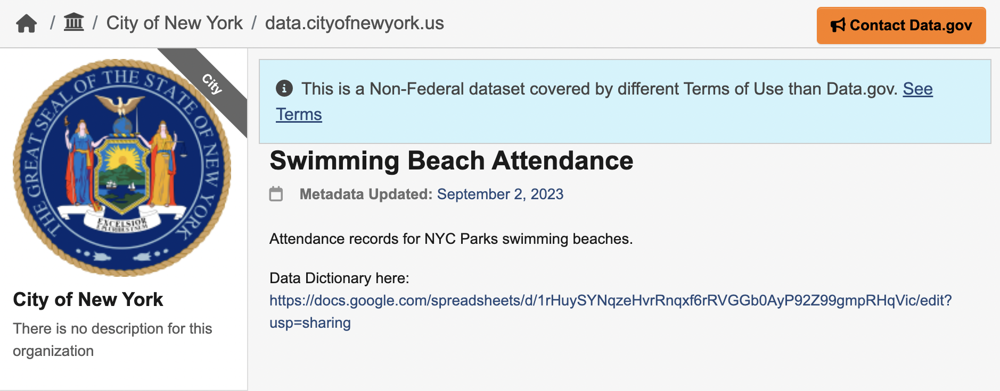
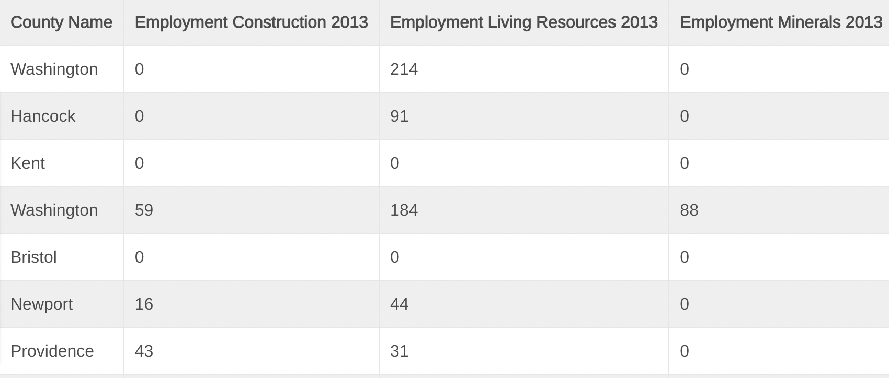
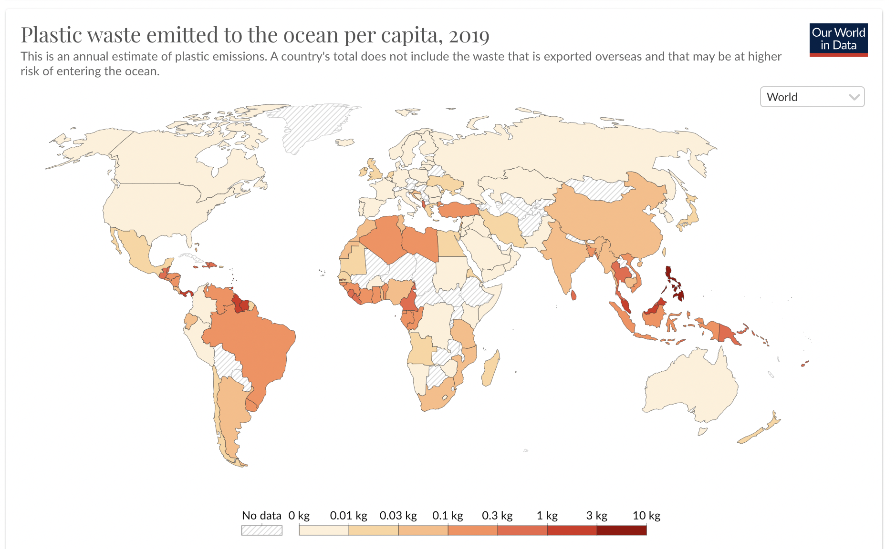
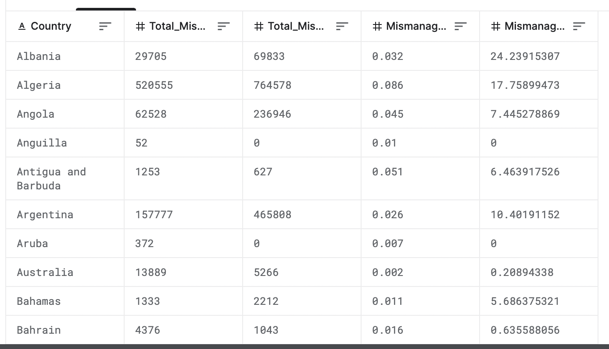
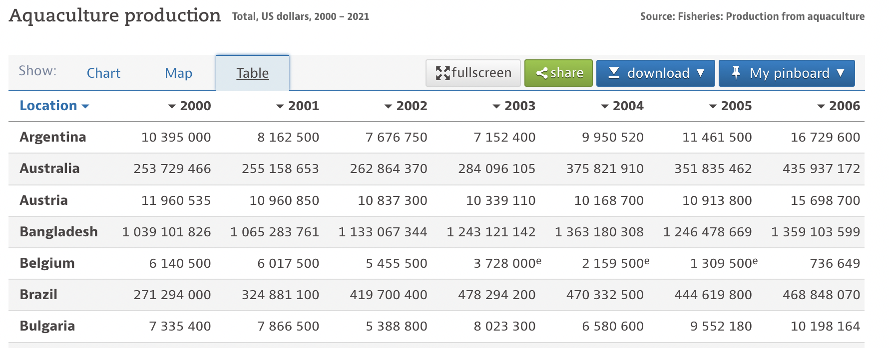
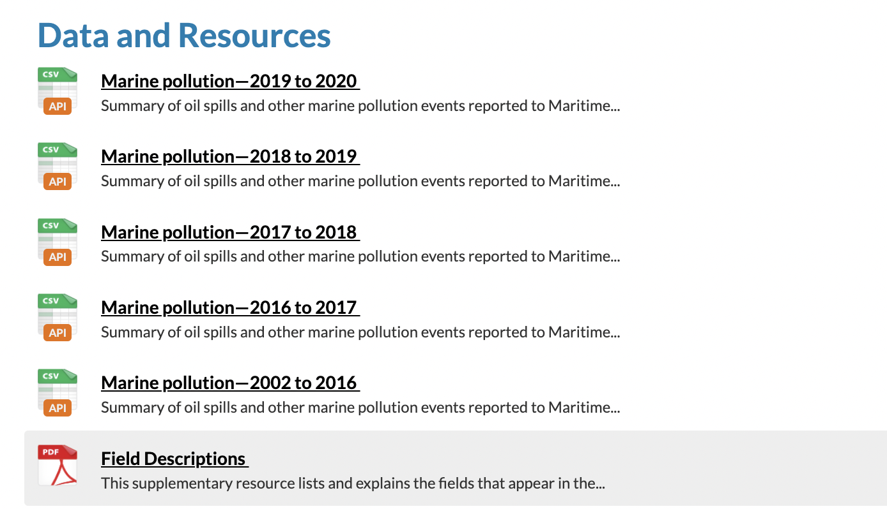
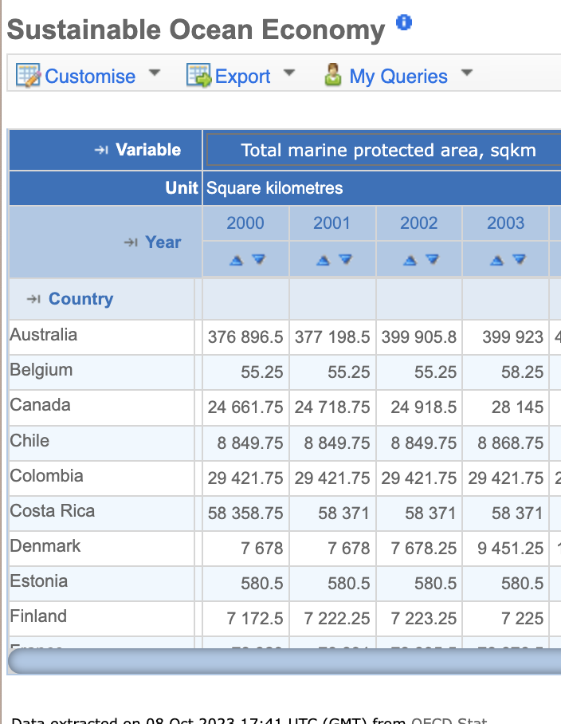

Data Gathering
Data gathering is crucial for any project. Within this tab, I will go over all the sources of my data as well as the methods I used to extract this data.
I divided this page into five sections. Within each section, I will provided datasets that relate to the topic stated. These sections include:
- Why Ocean Sustainability is Necessary
- How the Ocean Helps Us
- Negative Impacts on Ocean Sustainability / Human Impact
- Benefits of Investing in Sustainability
- What is Currently Being Done to Help
Within this tab I will summarize the dataset I found and what questions it could possibly answer, provide a link to the dataset, a link to the cleaned data and the data extraction method and a pictute of the data before extracted
Why Ocean Sustainability is Necessary
1a. Plastic Leakage by Region Source
- This data set provides estimates of plastics leakage for the 15 different global regions.
- Extraction Method: Exporting as CSV
- Link to Cleaned Data: Here

How the Ocean Helps Us
2a. Beach Attendance Source
- This data set covers the beach attendance in the state of New York
- Extraction Method: Exporting as CSV
- Link to Cleaned Data: Here

2b. Employment in Ocean Sectors Source
- This data illustrates 2013 ocean economy employment (number of jobs) for Northeast coastal counties, which comprise of 33 counties from Maine to New York.
- Extraction Method: Exporting as CSV

Negative Impacts on Ocean Sustainability / Human Impact
3a. Plastic Pollution Source
- This dataset includes global data on plastic waste generation, pollution and trade. This resource also includes data visualiation already created to help readerse understand the dataset.
- Extraction Method: Exporting as CSV

3b. Mismanaged Plastic Waste Source
- This dataset provides information on mismanaged waste on many countries. Mismanaged waste is material at high risk of entering the ocean.
- Extraction Method: Exporting as CSV

Benefits of Investing in Sustainability
4a. Aquaculture Production Source
- This data set provides the Aquaculture Production by Country from 2000 to 2021.
- Extraction Method: Exporting as CSV

4b. Aquaculture Production - CatFish Source
- Statistics on domestically grown fish / U.S. imports and exports of fish that may be products of aquaculture, such as salmon, shrimp, and oysters.
- Extraction Method: Exporting as CSV
What is Currently Being Done
5a. Marine Pollution Act Source
- The Transport Operations (Marine Pollution) Act 1995 and regulations protect Queensland’s marine and coastal environment by minimising deliberate and negligent discharges of ship-sourced pollutants into coastal waters.
- Extraction Method: API in Python

5b. Marine Pollution Act Numbers Source
- Gives the numbers for the total MPA in a country
- Extraction Method: Export as CSV

Python API
I used the news API that we were introduced to in class. I used this API to pull news about ocean sustainability. I put the title and descriptions into text files and will do a text analysis with this data.
Link to Code: Here
Text Files: